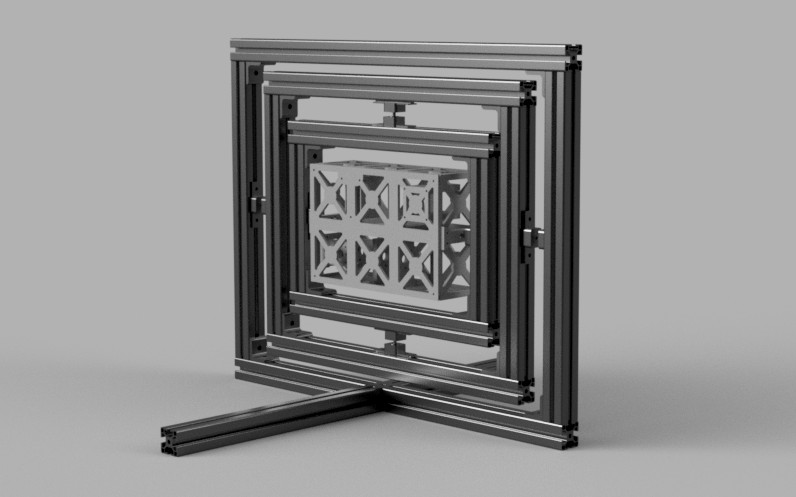

← All Projects
6U Orientation Demo — 3-DOF Gimbal
Space · Control SystemsA team project to prove and test attitude control concepts for a 6U CubeSat using a 3-degrees-of-freedom benchtop gimbal testbed.
The system demonstrated closed-loop attitude control, validating sensor fusion algorithms and actuation strategies before committing them to flight hardware. The gimbal allowed the team to simulate orbital disturbance torques and test the controller's response.
This project served as a risk-reduction exercise for the broader CubeSat program, building confidence in the control architecture through hands-on hardware testing.